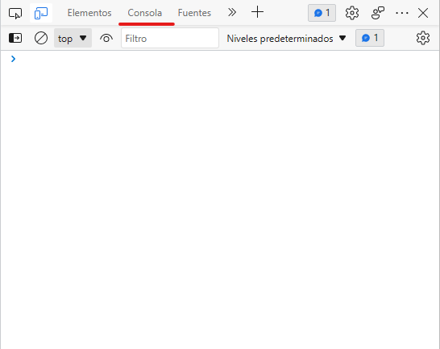

La consola
Lo primero que debe conocer un desarrollador frontend es la consola, la herramienta que mas va a utilizar al desarrollar en la web.
Para accceder a ella primero abre una pagina en blanco en cualquier navegador con about:blank.
Seguido de ello presiona Ctrl+Alt+I, esto abrirá el inspectór de elementos, este contará con toda la información de la pagina en la que estás, como el codigo html y css, los metadatos, assets, etc.
Lo que nos interesa ahora mismo es la pestaña de "Consola"

con esto puedes hacer tu primer programa.